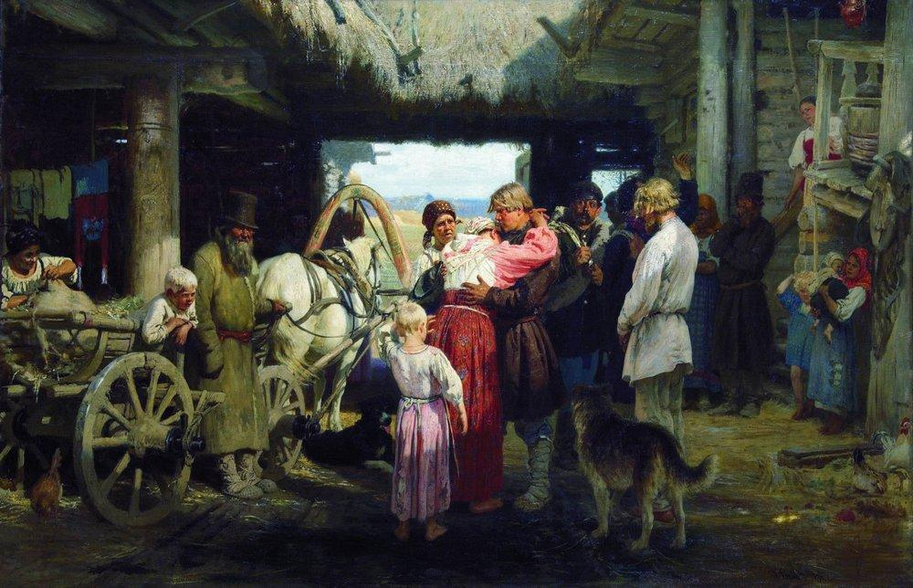
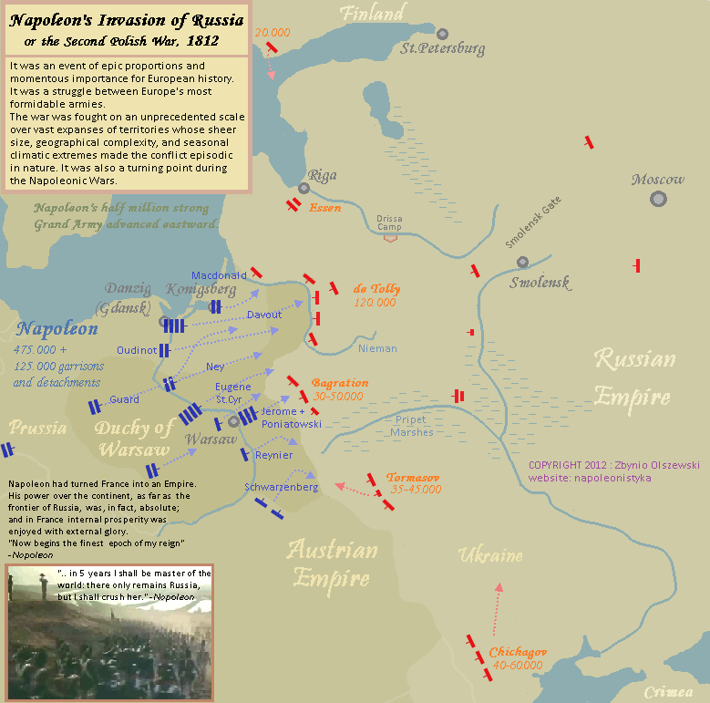
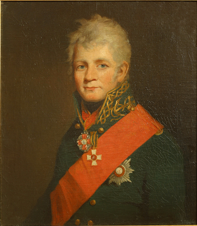

1812년 나폴레옹을 기다리는 러시아군의 내부 사정 (제3편)
게시: 2019-11-11T06:30:00+09:00
이미 1811년부터 러시아는 프랑스와 언제 한판 붙어도 이상하지 않을 정도로 분위기가 좋지 않았습니다. 쉽게 말해서 1812년 6월 경 러시아는 거의 1년 넘게 전쟁 준비를 했다는 이야기입니다. 이제 나폴레옹을 맞이할 러시아의 준비 상태는 과연 어느 정도였을까요 ? 한줄 요약하자면 머리 수만 따지면 프랑스군의 그랑다르메에 비해 그다지 나쁘지 않았습니다. 원래 1805년 당시 러시아의 징집 제도는 일종의 지역 차출제로서, 지역 농노들 500명 중에서 4명의 장정을 병정으로 차줄하는 것이었습니다. 이렇게 차출된 운 나쁜 젊은이에게는 25년의 병역 의무가 주어졌는데, 당시엔 전화는 커녕 우편도 변변치 않았는데다 어차피 본인이나 가족이나 모두 문맹인 경우가 많아서 가족과 연락을 주고 받을 일도 없었습니다. 그러다보니 25년 간의 병역을 다 마치고 마을로 돌아오면 사실상 가족이나 친구들이나 다 남남이 되어 있었고, 그걸 잘 아는 제대 병사들은 고향으로 돌아갈 생각도 하지 않았습니다. 따라서 이렇게 마을에서 차출된 청년이 군대로 떠나는 날이면 온 동네 사람들이 모여서 이 청년을 배웅했는데, 이건 사실상 일종의 장례식 같은 행사였다고 합니다. 아무도 이 청년이 살아서 가족에게 되돌아올 것이라고는 생각하지 않았습니다. 사실 이런 사정은 영국군도 비슷했습니다. 다만 영국군은 모병제라서 급여가 그리 나쁜 편이 아니었다는 점만 달랐지요. 여러 모로 영국군과 러시아군은 비슷한 면이 많습니다.

(댓글에 '궁금'님이 알려주신 러시아 징집 장정의 배웅 모습입니다. 분위기가 장례식인 이유가 다 있습니다.)
러시아는 아우스테를리츠에서의 뼈 아픈 참패 이후, 나폴레옹과의 긴 전쟁을 예감하고 징집율을 500명 중에서 5명으로 20% 증강시켰습니다. 그 결과, 1806년부터 1811년 사이 기간에 새로 징집된 러시아군 병사의 수는 50만 명에 달했습니다. 게다가 1811년에는 이런저런 사정으로 제대 했으나 아직 현역 복무에 적합한 나이와 신체 조건을 가진 제대 군인 약 6만을 재입대 시켰고, 1812년에는 당장 임박한 전쟁에 대비하기 위해 징집률을 500명 중 7명으로 한시적으로 늘렸습니다. 덕분에 1807년 아일라우 전투 때는 러시아군 전체 숫자가 50만이 채 안되었으나, 1812년 9월 경에는 무려 90만이 넘게 되었습니다. 하지만 러시아는 땅이 넓었고 사방에 적이 많았습니다. 따라서 1812년 5월 나폴레옹의 위협에 대적하기 위해 리투아니아에 집결한 러시아 야전군은 바클레이 드 톨리의 제1군 약 16만과 바그라티온의 제2 군 약 6만이 전부였습니다. 저 남쪽 오스트리아와의 접경 지대에는 토르마소프(Tormasov) 장군의 제3 군 약 5만이 있었고 후방에도 2개의 예비 군단 총 11만 정도가 대기하고 있긴 했습니다. 이런 지원부대까지 다 합하면 나폴레옹의 그랑다르메와 맞설 러시아군 야전군은 총 39만에 달했습니다.

(나중에 다시 보시겠지만 당시 나폴레옹의 침공에 맞선 러시아 야전군은 크게 3개로서, 북쪽부터 바클레이, 바그라티온, 토르마소프가 각각 지휘하고 있었습니다. 그러나 토르마소프의 부대는 나머지 부대과 광활한 핀스크(Pinsk, 혹은 Pripet) 습지로 격리되어 있어서 사실상 협동 작전은 불가능했습니다. 애초에 토르마소프의 제3 군은 오스트리아가 헝가리와 루마니아 쪽으로부터 직접 침공해올 것에 대비한 부대였습니다.)
(핀스크(Pinsk, 혹은 Pripet) 습지는 제1,2차 세계대전 때도 주요 장애물 역할을 했습니다. 그 때문에 나찌 독일군은 이 지역에서 모조리 물을 빼고 독일 주민들을 대거 이동시켜 식민지화할 생각까지 했다고 합니다. 윗 그림은 19세기 화가 이반 쉬시키(Ivan Shishkin)이 그린 핀스크 습지의 풍경입니다.) 이 정도면 나폴레옹에게 일방적으로 밀릴 수 밖에 없는 병력이 아니었습니다. 오히려 공세로 나갈 수도 있을 정도의 군세였지요. 게다가 당시 러시아 측은 나폴레옹의 그랑다르메의 군세를 실제보다 깎아서 평가하고 있었습니다. 바클레이 드 톨리는 러시아로 침공해올 그랑다르메의 병력을 20~25만으로 보았고, 바그라티온은 20만, 베니히센은 19만 정도로 보았습니다. 러시아 측에서 가장 높게 평가한 숫자도 후방의 지원부대까지 다 합해서 35만을 넘지 않았습니다. 사실 지금도 과연 네만 강을 건너 러시아로 진격해 들어간 나폴레옹 휘하의 병력이 몇 만인가에 대해서 정확한 기록이 없긴 합니다. 많은 역사가들이 실제로 네만 강을 건넌 병력의 수를 대략 40만이라고는 하지만, 아마 당시 나폴레옹은 물론 그 누구도 실제로 몇 명이나 네만 강을 건넜는지 알지 못했을 것입니다. 네만 강 서안에 집결하여 최종 점검을 할 당시, 나폴레옹은 휘하 군단장들에게 "제발 솔직하게 각 예하 부대의 정확한 병력 숫자와 군수품 준비 상태를 파악하여 보고하라"라는 명령을 내린 바 있었습니다. 하지만 모든 사람은 거짓말을 합니다. 나폴레옹의 요구는 끝이 없었고 그에 비해 사람과 돈과 물자는 부족해서 도저히 매뉴얼과 명령서대로 전체 부대의 편성을 완벽하게 해놓을 수가 없었기 때문에, 많은 장군들은 그냥 휘하 부대원의 수를 서류상으로만 존재하는 것처럼 보고하는 것을 택했습니다. 또 정확하게 보고하려고 해도, 당시 행정반에는 최신 데이터베이스와 고속 통신망은 커녕 전자계산기조차 없었으니 정확한 현황 파악이 불가능했을 것입니다. 상황이 그렇다보니 러시아 측에서는 후퇴 작전 따위는 애초에 거의 생각하지 않고 있었습니다. 오히려 여론은 러시아군이 네만 강을 건너야 한다는 것이었습니다. 공격파의 논리는 이런 것이었습니다. 러시아군이 공세를 펼쳐 먼저 폴란드를 정복하고 프로이센까지 진격한다면 프로이센은 물론 나폴레옹에게 짓눌려있던 오스트리아나 폴란드 내의 친러파들이 봉기할 것이므로 훨씬 더 유리하게 전쟁을 이끌고 나갈 수 있다는 것이었습니다. 이런 아우성은 저 멀리 후방의 상트-페체르부르그나 모스크바에서 더 요란했습니다. 예나 지금이나 전선에서의 거리와 용기는 정비례하는 법이거든요. 그런데 꼭 후방에서 편히 먹고 마시는 신사숙녀들만 공격하자고 아우성을 치는 것은 아니었습니다. 당장 총성이 울리고 옆 전우의 창자가 쏟아져 흙바닥에 뒹구는 것이 아니다보니, 최전선의 장교들도 나폴레옹 따위 한주먹거리도 안 된다며 당장 쳐들어가자고 기세가 등등했습니다. 젊은 장교들 뿐만 아니라 바그라티온도 당장 공세로 나가자고 짜르 알렉산드르에게 집요하게 매달렸습니다. 특히 바그라티온은 오스만 투르크와의 접경에서 쿠투조프(Kutuzov) 장군 밑에서 복무하고 있던 러시아 해군제독 치차고프(Pavel Vasilievich Chichagov)가 내놓은 공격안에 열광했고, 알렉산드르도 거기에 상당히 혹해 있었습니다. 이 공격안에 따르면 이제 오스만 투르크와 불가침 조약을 맺었으니 발칸반도를 관통하여 프랑스령 일리리아(Illyria), 즉 현재의 크로아티아 지역을 공격하자는 것이었습니다. 이 쪽이 프랑스 제국의 '취약한 아랫배'라는 것이었지요. 여기를 들이치면 이탈리아와 오스트리아도 들썩거릴 수 밖에 없으니 후방이 불안해진 나폴레옹은 도저히 러시아 내부로 진격할 수 없을 것이라는 주장이었습니다. 하지만 러시아에도 냉정한 두뇌들은 많았습니다. 치차고프 공격안을 그대로 수행한다면 오히려 오스만 투르크와 오스트리아가 화들짝 놀라 반-러시아 진영으로 돌아설 것이라는 판단이 내려졌고 이 공격안은 최종적으로 기각되었습니다.

(치차고프 제독입니다. 그는 스웨덴과의 전쟁에서 복무한 이후 20대에 영국 해군 대학에서 공부를 했는데, 거기서 Elizabeth Proby라는 영국 아가씨와 사랑에 빠졌습니다. 29세의 나이로 귀국한 그는 즉각 엘리자베스와의 결혼 승인을 요청했는데, 당시 짜르이던 파벨 1세는 "러시아에도 신부감이 넘쳤는데 웬 영국 여자?"라며 거부했습니다. 그러자 이 겁없는 청년은 난동을 부렸고 당연히 즉각 투옥되었습니다. 하지만 젊은이의 패기 넘치는 사랑에는 죄가 없었는지, 그는 또 금새 석방되었을 뿐만 아니라 엘리자베스와의 결혼도 허락을 받았고 더 나아가 해군 준장으로 승진까지 했습니다. 불행히도 엘리자베스는 1811년 사망했고, 치차고프는 베레지나 전투에서 프랑스군이 빠져나가도록 해줬다는 비난을 받아야 했습니다. 결국 그는 1813년 이후 군을 떠나 프랑스로 가버렸고 두번 다시 러시아로 돌아가지 않았으며 1849년 파리에서 죽었습니다.) 제1군 사령관이자 국방부 장관으로서, 실질적인 총사령관이었던 바클레이 드 톨리의 기본 계획은 무엇이었을까요 ? 그는 1807년 아일라우 전투에서 중상을 입은 뒤 병상에 누운 채로 '이제 나폴레옹을 막아내기 위해서는 러시아 내부로 깊숙이 프랑스군을 유인하여 종심이 길어지게 만든 뒤 프랑스군이 분산되고 소모되면 그때서야 결전을 벌여야 한다'라는 전략 계획서를 만든 바 있었습니다. 그러나 아일라우에서 큰 피해를 입은 러시아군의 사정을 반영한 계획서였고, 바클레이가 1812년에도 그런 후퇴안부터 고려하고 있던 것은 아니었습니다. 그렇다고 그도 들뜬 러시아인들처럼 선제 공격을 해야 한다고 주장하는 것은 아니었습니다. 특히 그가 눈치를 볼 수 밖에 없었던 짜르 알렉산드르는 선제 공격에 대해서는 매우 신중한 입장이었는데, 이는 알렉산드르의 성격이 신중해서가 아니라 이 전쟁이 러시아의 공격으로 촉발된 침략전이 아니라 외적의 침공으로부터 러시아의 성스러운 영토를 수호하기 위한 수호전이라는 인상을 대내외적으로 주고 싶어했기 때문이었습니다. 짜르가 그런 성향이다보니 당연히 바클레이는 그저 병력을 네만 강을 따라 주욱 펼쳐놓고 '프랑스군이 강을 건너지 못하도록 강을 천연 장애물로 활용하여 방어전을 펼친다'라는 소극적인 대처만을 하고 있었습니다. 이런 수비 위주의 전략 때문에 바클레이는 주전파 러시아 장교들로부터 비웃음을 당하고 있었습니다. 알고보면 비웃음을 당해야 하는 것은 바클레이가 아니라 알렉산드르였지요. 그런데 알렉산드르는 무슨 생각에서 그랬는지 몰라도, 바클레이를 총사령관으로 명확하게 임명하지 않고 있었습니다. 가장 크고 중요한 제1 군 사령관인데다 국방부 장관이기까지 하니까 따로 총사령관이라는 겉멋이 든 직위를 새로 만들 필요가 없다고 생각해서였는지, 혹은 총사령관은 당연히 자기 자신이라고 생각해서 그랬는지는 불분명합니다. 그렇게 총사령관 임명을 빼먹은 것도 문제였는데, 더 나쁜 것은 짜르 알렉산드르가 제1 군 사령부인 빌나까지 직접 찾아와서 휘하에 온갖 참모진을 줄줄 달고 다니면서 감놔라 배놔라 참견이 심했다는 것이었습니다. 군조직에서 원래 그러면 안된다는 것은 상식이었고, 알렉산드르도 그런 점은 잘 알고 있었습니다. 그래서 곧 반성하고 '앞으로는 절대 군 명령 체계에 관여하지 않겠다'라는 약속을 바클레이에게 하기도 했습니다. 그러나 그 약속을 한 지 얼마 되지도 않아 마차 1대에 실어야 하는 짐의 적정량에 대해서 이런저런 제안을 내놓으며 간섭을 재개했습니다. 더 나쁜 것은 짜르가 이렇게 현장에 상주하며 참견질을 하다보니, 바클레이를 무시하고 짜르에게 직접 보고를 하는 버릇없는 장군들이 생겨나기 시작했다는 것입니다. 대표적인 인물이 바로 바그라티온이었습니다. 그는 수비 위주의 작전을 선호하는 바클레이를 의도적으로 투명인간 취급하고 짜르에게만 보고서를 보냈습니다. 이 모든 혼란이 궁극적으로는 알렉산드르 개인의 책임이었습니다. 그래도 결국 어떤 작전으로 나폴레옹을 맞이할 것인가에 대해서는 뭔가 준비가 있지 않았겠습니까 ? 국가 존망이 걸린 이런 중대 위기를 앞두고 설마 이렇게 우왕좌왕 하면서 시간을 까먹고 있지는 않았겠지요 ?
Source : 1812 Napoleon's Fatal March on Moscow by Adam Zamoyski https://en.wikipedia.org/wiki/Pavel_Chichagov https://en.wikipedia.org/wiki/Pinsk_Marshes http://napoleonistyka.atspace.com/Invasion_of_Russia_1812.htm